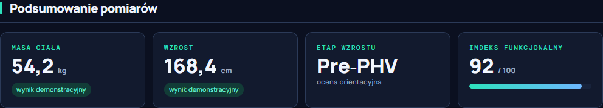
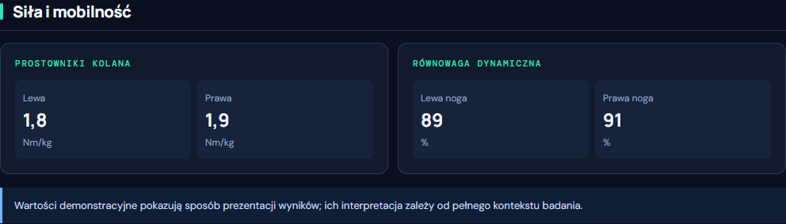
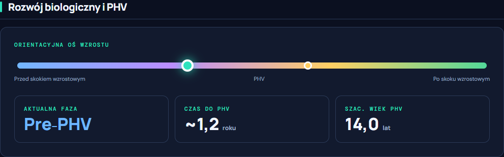
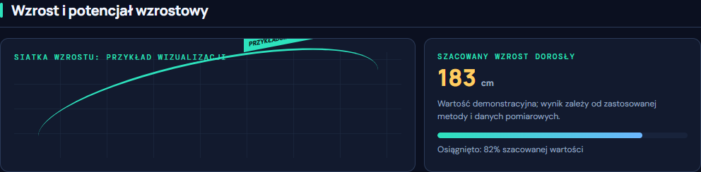

Rozwój biologiczny i PHV
Ocena etapu wzrostu i dojrzewania biologicznego.
Gdański Uniwersytet Medyczny · Gdańsk
Zapraszamy zdrowych młodych piłkarzy do bezpłatnych badań prowadzonych przez Gdański Uniwersytet Medyczny.
Zgłoś dziecko do bezpłatnych badańZgłoszenie i zgody są składane wyłącznie na oficjalnej stronie projektu.
CO OTRZYMA UCZESTNIK?
Jedna wizyta, sześć ważnych obszarów ocenianych przez zespół badawczy.
Ocena etapu wzrostu i dojrzewania biologicznego.
Pomiary wspierające ocenę budowy ciała.
Ocena wybranych parametrów siłowych.
Testy ruchowe i funkcjonalne.
Informacje o sposobie żywienia młodego sportowca.
Elementy laboratoryjnej oceny zdrowia.
BADANIA KRWI
Uczestnicy przechodzą zaplanowane w projekcie badania laboratoryjne. Obejmują one podstawowe parametry oraz wybrane wskaźniki związane między innymi z gospodarką kostną, metabolizmem i procesami biologicznymi zachodzącymi podczas wzrostu.
Bez kosztów dla rodzica. Zakres badań jest elementem projektu badawczego, a nie komercyjnym pakietem diagnostycznym.
DOBRZE WYKORZYSTANY CZAS
Na kompleksową wizytę badawczą należy zarezerwować około 2–3 godziny. Wiemy, że to sporo czasu, dlatego po zakończeniu oceny opracowujemy wyniki i przygotowujemy dla rodzica indywidualny raport zawodnika.
Pobranie krwi można wykonać samodzielnie w Laboratorium UCK, w dogodnym terminie. Laboratorium działa 6 dni w tygodniu, również w soboty.WAŻNY EFEKT UDZIAŁU
W przystępnej formie podsumuje on najważniejsze wyniki dziecka. To konkretna informacja, która pomaga lepiej rozumieć jego aktualny etap rozwoju.
Raport ma charakter informacyjny i nie zastępuje konsultacji medycznej.




AKTUALNA REKRUTACJA
TO PROSTE
Prześlij zgłoszenie przez oficjalną stronę projektu.
Ustalimy szczegóły i dogodny termin wizyty.
Spotkamy się w Gdańskim Uniwersytecie Medycznym w Gdańsku.
GDZIE I KIEDY?
Gdański Uniwersytet Medyczny
ul. Dębinki 7, budynek 15II piętro · drzwi po lewej stronie
W soboty parking UCK za szlabanem jest bezpłatny.